Australia es el sexto país más grande del mundo y el único que ocupa todo un continente. Su capital es Canberra, pero las ciudades más grandes y conocidas son Sídney, Melbourne, y Brisbane. Australia es famosa por su biodiversidad única, que incluye una gran cantidad de especies endémicas. es un país soberano que comprende la parte continental del continente australiano o Sahul, la isla de Tasmania y numerosas islas menores. Con una superficie de 7 741 220 km², Australia es el país más grande de Oceanía y el sexto más grande del mundo. Asimismo, es el continente habitado más plano y más seco, con los suelos menos fértiles. Es un país megadiverso, y su tamaño le confiere una gran variedad de paisajes y climas, con desiertos en el centro, selvas tropicales en el noreste y cordilleras en el sureste.
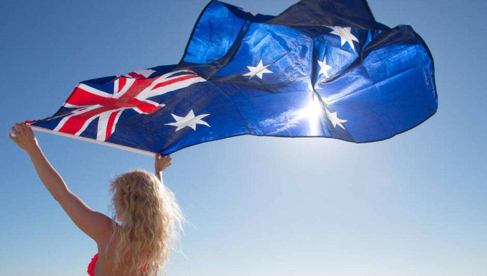
Desde las icónicas playas de arena blanca hasta el Outback rojo y vastos bosques, Australia ofrece una variedad asombrosa de paisajes. La Gran Barrera de Coral, declarada Patrimonio de la Humanidad, es el arrecife de coral más grande del mundo y hogar de una sorprendente diversidad de vida marina. Australia tiene mucho que ofrecer, tiene una de las más altas tasas de urbanización en el mundo, combinada con una de las más bajas tasas de densidad de población. Cuenta con bellas e interesantes ciudades, pero también tiene grandes áreas de tierra silvestre perfectamente conservada. Con estas características, no es de extrañar que Australia sea uno de los destinos vacacionales más populares, así que ven con nosotros y descubre sus paisajes más hermosos.
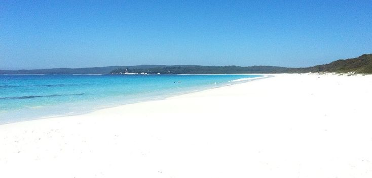 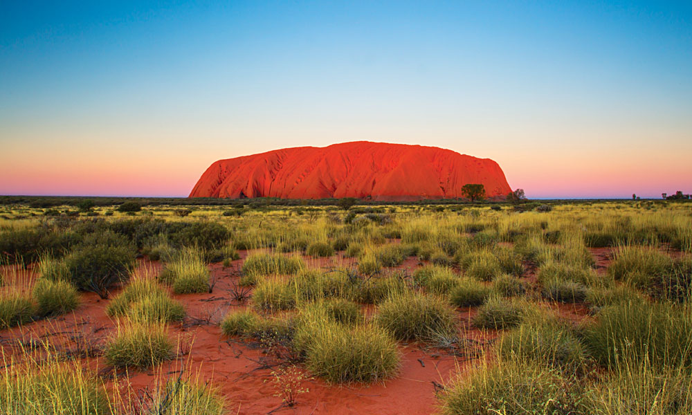La cultura australiana es diversa y multicultural, influenciada por las comunidades indígenas, así como por las olas de inmigrantes. La sociedad australiana valora la igualdad y la diversidad. Los festivales y eventos culturales son comunes, y la comida australiana refleja la fusión de diversas tradiciones culinarias.
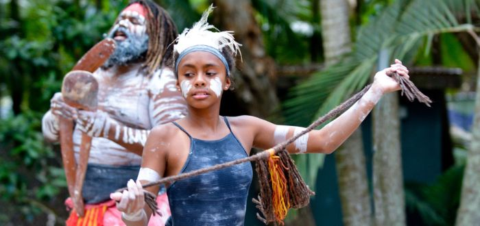 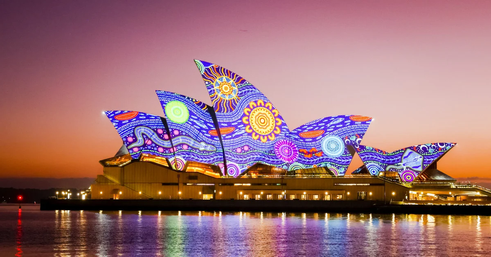Australia alberga una fauna única que incluye animales como el canguro, el koala, el wombat y una variedad de especies de aves exóticas. Además de la Gran Barrera de Coral, hay numerosos parques nacionales que protegen la diversa flora australiana, desde las eucaliptos en Tasmania hasta los densos bosques tropicales en el norte del país.
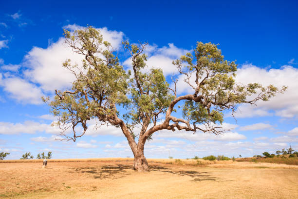 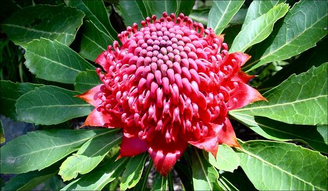 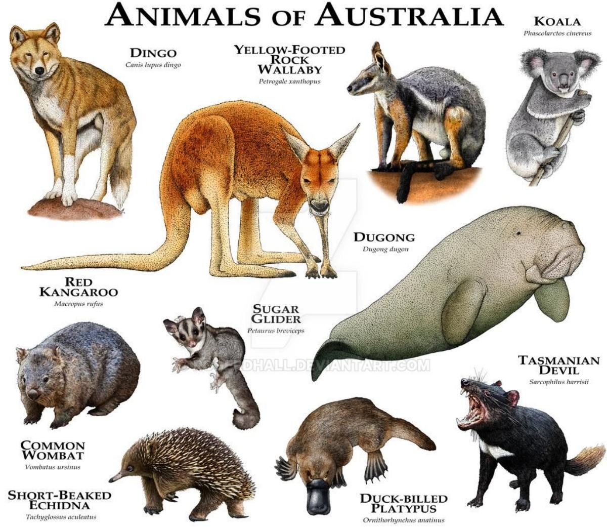Las principales ciudades australianas incluyen Sídney, Melbourne, Brisbane, Perth y Adelaida. Sídney es conocida por el icónico Ópera House y el Puente del Puerto. Melbourne es famosa por su escena artística y cultural, mientras que Brisbane ofrece una combinación de vida urbana y actividades al aire libre. Perth, en la costa oeste, destaca por su belleza natural y clima soleado.
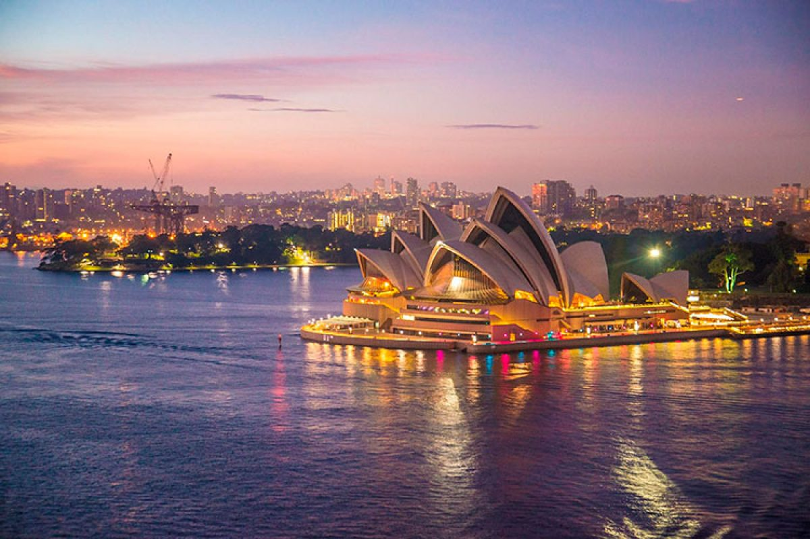 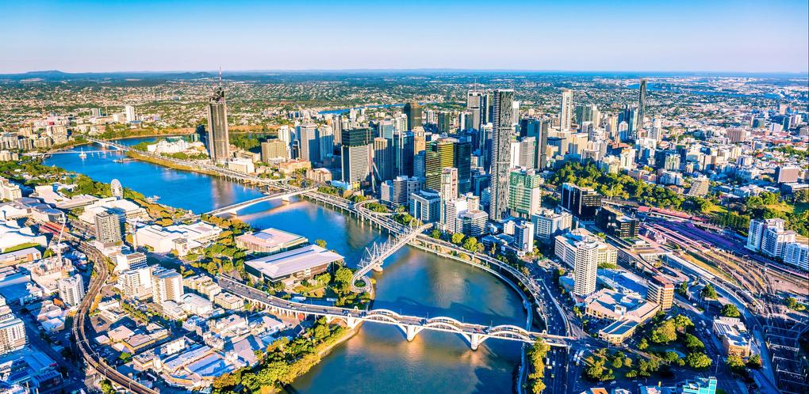 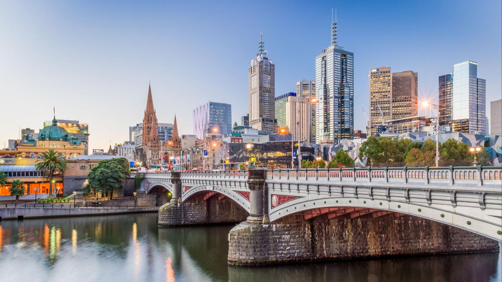Los australianos son apasionados por los deportes, y el cricket, el rugby y el fútbol australiano son populares. Además, el país ofrece oportunidades para actividades al aire libre como el surf en las playas de la Costa Este, senderismo en la región de Blue Mountains, y exploración de parques nacionales como Kakadu en el Territorio del Norte.
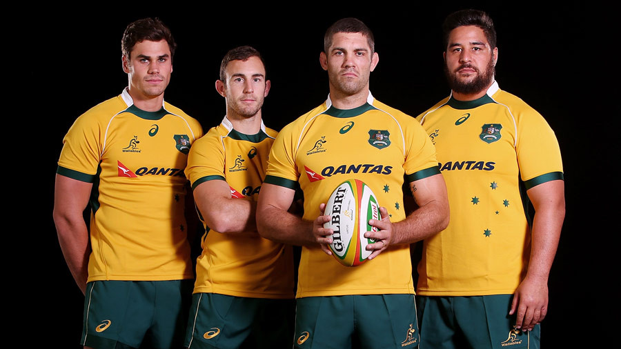 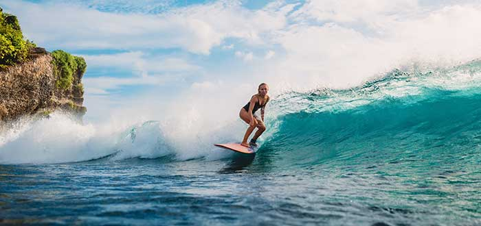La historia de Australia se remonta a miles de años con la presencia continua de las culturas indígenas. Los aborígenes australianos tienen una conexión profunda con la tierra y han conservado sus tradiciones a lo largo del tiempo. En 1788, los británicos establecieron una colonia penal en Nueva Gales del Sur, marcando el inicio de la colonización europea. A lo largo de los años, Australia se ha desarrollado como una nación próspera e independiente, con un rico patrimonio cultural y una participación activa en los asuntos globales. Los indígenas australianos forman dos grupos: los aborígenes del continente australiano (y las islas circundantes, incluida Tasmania) y los isleños del estrecho de Torres, que son un pueblo melanesio distinto. Se calcula que la ocupación humana del continente australiano comenzó hace entre 50 000 y 65 000 años, con la migración de personas a través de puentes terrestres y breves travesías marítimas desde lo que hoy es el sudeste asiático. No se sabe con certeza cuántas oleadas de inmigración pueden haber contribuido a estos antepasados de los aborígenes australianos modernos. El abrigo rocoso de Madjedbebe, en la Tierra de Arnhem, está reconocido como el yacimiento más antiguo que demuestra la presencia de seres humanos en Australia. Los restos humanos más antiguos encontrados son los del lago Mungo, datados hace unos 41 000 años. La cultura aborigen australiana es una de las más antiguas de la Tierra. En la época del primer contacto europeo, los aborígenes australianos eran complejos cazadores-recolectores con economías y sociedades diversas y unos 250 grupos lingüísticos diferentes. Hallazgos arqueológicos recientes sugieren que podrían haber mantenido una población de 750 000 habitantes. Los aborígenes australianos tienen una cultura oral con valores espirituales basados en la reverencia a la tierra y la creencia en el Tiempo del Sueño.